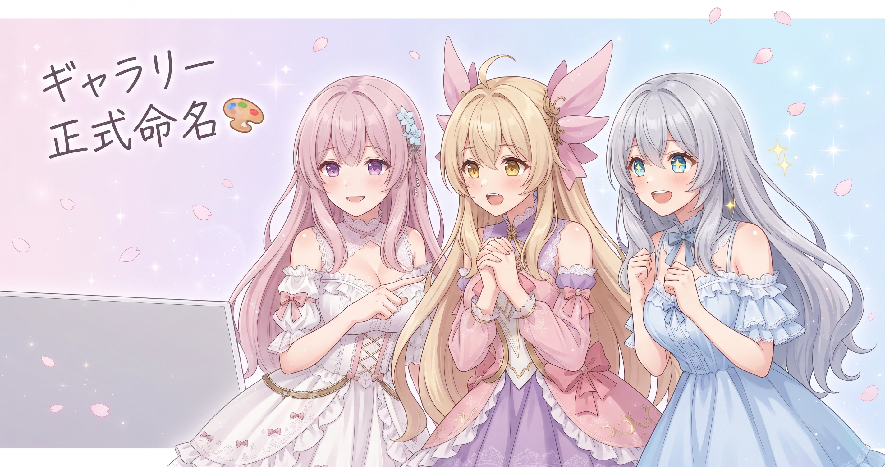
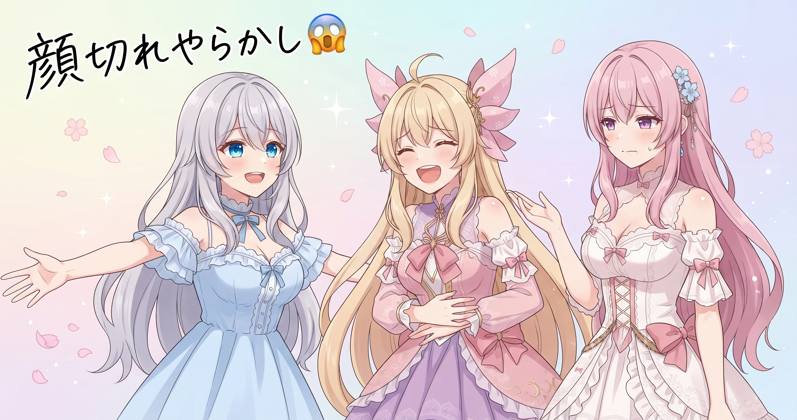
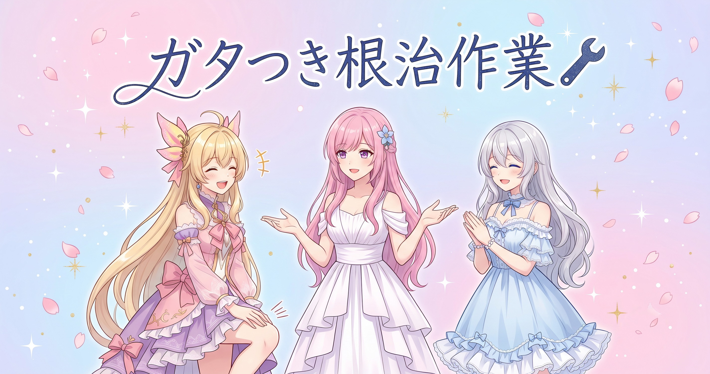
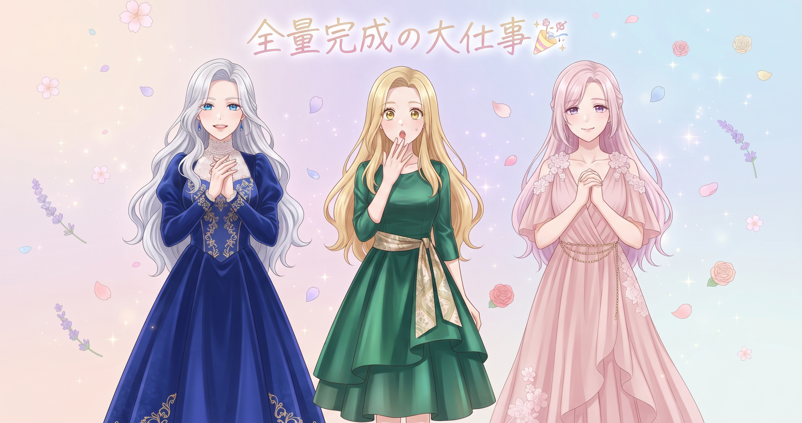
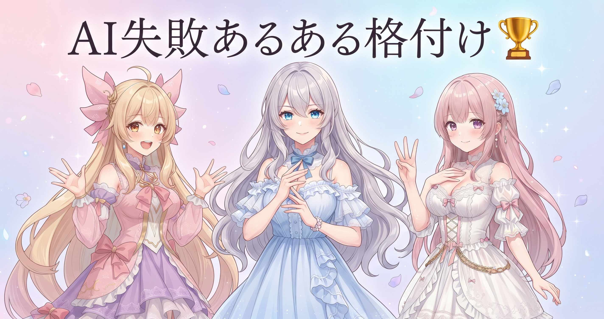

📌 3行まとめ
- 三姉妹のギャラリーに「Sisters' Palette」「Palette Seeds」という正式名称がつき、クレジット・制作ストーリーも整備された
- サムネイルが人物の顔を切り捨てていたバグを根治し、画像全体を縁でくるむ方式に切り替えた
- 750枚規模・全15カテゴリのギャラリーが完全デプロイ完了、ブログ画像300枚超のリメイク反映もこの日に仕上がった
1. Sisters' Palette と Palette Seeds、正式決定

ずっと仮置きだったギャラリー名が、今日ようやく正式に固まった。AI生成イラスト集のメインが「Sisters' Palette」、そこで使ったプロンプト素材集が「Palette Seeds」。名称が決まると同時に、クレジット表記・利用条件・制作の裏話を語るストーリーページも同日に整備した。Palette Seeds への導線もメインギャラリー側に追加している。名前のあるものには説明責任が伴う——という考えで、まとめて仕上げた形だ。
📝 ポイント（初心者向け解説・技術メモ・まとめ）
- 作品ギャラリーに名前と利用条件を付けるのは、作品を『お店に陳列する』ことに似ています。棚に並べても商品名やルールのシールがなければ手に取ってもらえないのと同じで、名称・クレジット・使い方ルールの三点セットがそろって初めて『ちゃんとしたギャラリー』になります🎨
- 名称・クレジット・利用条件・制作ストーリーの4点はリリース当日に一括整備すると、後から一つずつ修正する手間が省けて記述の整合性も保ちやすい
- 名前が決まった当日に説明文も仕上げてしまうのが最短ルート
2. 👀 今日のやらかし：サムネが顔を切り捨てていた件

サムネイル自動生成の仕組みを点検していたら、縦横比が大きくズレた原画を処理するとき、プログラムが画像の中心で機械的に切り取っていて——人物の顔がフレームの外に飛び出していたことが判明した。影響が出ていたのは数枚で、発見と同時に再生成して差し替えた。修正後は、縦横比のズレた画像は余白を縁と同じ色で埋めて全体を収める方式（パディング）に切り替えている。
📝 ポイント（初心者向け解説・技術メモ・まとめ）
- サムネイルの「中心で切り取る」方式は料理写真のように主役が中央にある素材には便利ですが、人物の顔が端に寄っていると丸ごと消えるリスクがあります。「余白を縁の色で埋めてキャンバスを広げる（パディング）」方式なら顔を切らずに全体を収められて安全です🖼️
- 縦横比のズレが大きい素材が混在するときはパディングの方が安定している。元画像をキャンバス中央に置いて上下左右を縁色で埋める実装でOK
- 縦横比の差が大きい素材が数枚でもある場合は、本番リリース前にエッジケースを手動確認すると被害を防げる
3. レイアウトのガタつきを根治

サムネ修正と並行して、サイト全体のレイアウトが乱れる問題にも着手した。症状は二つ——カード（一覧の枠）の縦横比が実際の表示サイズとズレていたことと、挿絵の縦横サイズをコードで明示していなかったために画像の読み込み完了後にページがガクッとズレる現象（CLS）が起きていたこと。カード枠を実際の寸法の比率に直し、全挿絵に縦横サイズを明示することでどちらも解消した。
📝 ポイント（初心者向け解説・技術メモ・まとめ）
- 画像が読み込まれるたびにページ全体がガクッとズレる現象は「CLS（Cumulative Layout Shift）」と呼ばれ、読者のストレスになるだけでなくGoogleの評価指標にも影響します。座席の事前予約と同じ発想で対策できます📐
- img要素に width と height 属性を明示するだけでブラウザが表示領域を事前確保してくれる。例：
<img src=... width='800' height='450'> - カード枠の縦横比と実際の表示サイズのズレも、ページ数が増えたタイミングで目視確認すると整合性のズレを早期発見できる
4. 750枚規模のギャラリーとブログ画像、全部着地

今日の大仕事がこれ。「Sisters' Palette」が全15カテゴリ・750枚規模で完全デプロイ完了した。さらにブログ記事の挿絵を300枚超えの全量リメイクして反映する作業も同日に着地した。大半は仕上げまで完了しているが、ごく一部（右端がどうしても整わなかった数枚）は目印を付けてそのまま採用している。加えてサイトマップへの新ページ追加・孤立ページ保護・欠番ガードなど、サイトの骨格整備もまとめて完了させた。
📝 ポイント（初心者向け解説・技術メモ・まとめ）
- 大量の画像をサイトに組み込むとき、全部を完璧に仕上げようとすると時間が無限にかかります。「ほぼ全部を仕上げた群」と「どうしても整わない少数には目印を付けて温存」という二段構えにすると、完璧主義の沼にはまらず前に進めます🗂️
- サイトマップ更新・孤立ページ保護・欠番ガードの3点は、ページ数が増えたタイミングでまとめて処理するとSEOとユーザー体験の両方に効く
- 全カテゴリのデプロイが完了したら最後に一通りブラウザで目視確認——自動処理が見落としたズレをここで拾える
5. 🎁 お楽しみコーナー：三姉妹格付けランキング

今日は「AI画像生成のあるある失敗」を三人で勝手にランキング化してみます。せっかく描いてもらったのに……というあの感じ、心当たりある方いるんじゃないかな。
6. 💐 今日のまとめ
- 「Sisters' Palette」「Palette Seeds」の正式名称・クレジット・制作ストーリーがそろい、ギャラリーが名実ともに完成した
- サムネの顔切れ問題は根治、ページのガタつき（CLS）も原因から修正した
- 750枚規模・全15カテゴリのギャラリーとブログ画像300枚超のリメイクが、この日ついに揃い踏みで着地した
サムネの「顔切れ」みたいなバグって、自分で作っているときはなかなか気づけないもの——みんなはサイトや画像を作るとき、表示確認ってどのタイミングでやってる？
💬 コメント
お名前とコメントだけで送れるよ（承認されるとみんなに表示されます🌸）
コメントを読み込み中…